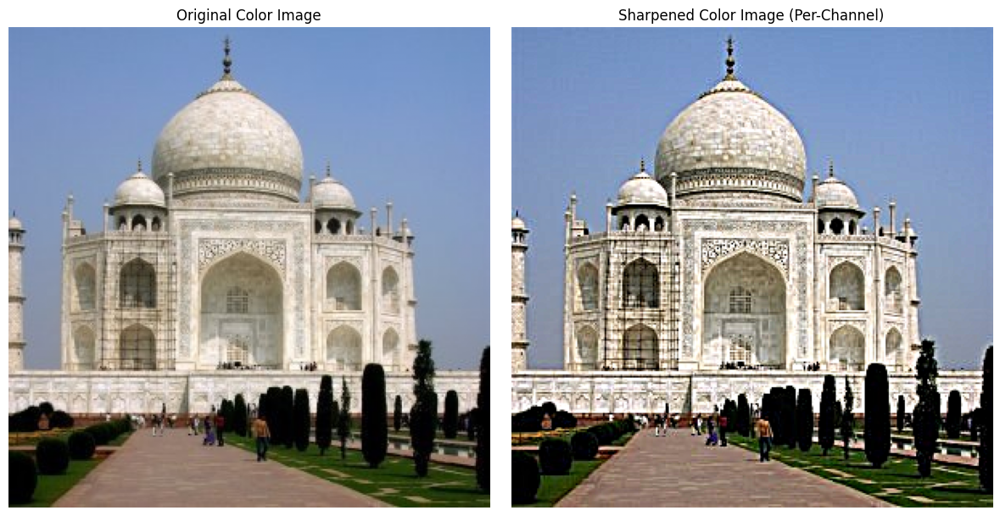

Project 2: Fun with Filters and Frequencies
In this project, I explored the fundamentals of image processing by implementing convolutions, applying various filters for edge detection, and manipulating image frequencies to create hybrid images and seamless blends. The goal was to build an intuition for how filters and frequency analysis can be used to extract features and create interesting visual effects.
Part 1: Fun with Filters
1.1: Convolutions from Scratch!
I implemented a 2D convolution function from scratch using NumPy. The process involves sliding a kernel over the image and computing the dot product at each location. I implemented padding to ensure the output image maintained the same dimensions as the input. Below is a comparison between my implementation and SciPy's built-in `convolve2d` function.
My Convolution Code Snippet
# Your Python code for convolution here
def my_convolve2d(image, kernel):
# ... implementation details ...
# Handle padding, loops, etc.
return output_image
Results
1.2: Finite Difference Operator
Using the finite difference operators $D_x$ and $D_y$, I computed the partial derivatives of the cameraman image. The gradient magnitude was then calculated. To create a clean edge image, I binarized the gradient magnitude by selecting a threshold to suppress noise while preserving the main structural edges.
1.3: Derivative of Gaussian (DoG) Filter
To reduce noise, I first smoothed the image with a Gaussian filter and then applied the finite difference operators. A more efficient approach is to convolve the Gaussian filter with the difference operators first, creating Derivative of Gaussian (DoG) filters.
Part 2: Fun with Frequencies!
2.1: Image "Sharpening"
Image sharpening can be achieved using an unsharp mask filter. This technique works by creating a blurred (low-frequency) version of the image and subtracting it from the original to get the high-frequency details, which are then added back to the original image.
Sharpened Image=Original Image+α(Original Image−Low-pass Filtered Image)
First, the code loads an image and separates it into its individual red, green, and blue color channels. For each channel, it creates a blurry version by applying a Gaussian blur. It then isolates the image's "details" (the sharp edges and textures) by subtracting the blurry version from the original channel. The key step is to then amplify these extracted details by multiplying them by a sharpening factor, alpha, and add them back to the original channel. After performing this process on all three color channels independently, the code stitches the sharpened channels back together to create the final, crisper color image.
Taj Mahal Example



2.2: Hybrid Images
Hybrid images combine the low frequencies of one image with the high frequencies of another, creating an image that is interpreted differently depending on the viewing distance.
Favorite Hybrid Example & Frequency Analysis
2.3 & 2.4: Gaussian/Laplacian Stacks & Multiresolution Blending
Multiresolution blending stitches two images by decomposing them into frequency bands using a Laplacian stack, combining them at each level with a soft mask, and then reconstructing the final image.
Here, we merge two images using a mask. Instead of working with the images directly, this method decomposes them into different frequency bands, allowing for a much smoother and more natural transition. The fundamental concept relies on two types of image pyramids. First, a Gaussian pyramid is constructed for an image by repeatedly blurring and downsampling it. This creates a multi-level stack of images, each representing a lower-frequency (blurrier) version of the one before it. From this, a Laplacian pyramid is created, which stores the high-frequency details (like edges and textures) by calculating the difference between adjacent levels of the Gaussian pyramid. In essence, this separates the broad colors and shapes of an image from its fine details. The main blend_images function orchestrates the entire process. After preparing the input images to ensure they are the same size and format, it builds a Laplacian pyramid for each of the two source images.It also builds a Gaussian pyramid for the blending mask. Using a blurred, multi-scale mask is the key to the seamless effect, as it ensures the transition is gradual at every frequency level. The code then creates a new, blended Laplacian pyramid by combining the levels from the two source pyramids according to the corresponding blurred mask level. Finally, the collapse_pyramid function reconstructs the final image from this newly created blended pyramid. It works in reverse, starting with the smallest, blurriest image at the pyramid's base and iteratively upsampling it while adding back the combined detail information from each level. This process continues until the full-resolution, seamlessly blended image is formed.
"Oraple" Blending Process


Laplacian & Gaussian Stacks for "Oraple"


Custom Blended Images
Custom Blend 1: Camrolla
For my second custom image, I chose to blend two of my favorite animals: a quokka and a penguin. Together, these make the Quenguin. I decided to use an ellipsis shape for my mask and switch out their heads. The images I found online were in different dimensions, so I used Canva to resize them to the same dimension. Then I created the mask by resizing the ellipsis on the quokka’s face. As you can see in my first try, this wasn’t a good choice because the quokka’s face is larger than the penguin’s, so the transparent background leaked through, leading to an ugly blend. I revisited my ellipsis design and instead made it the shape of the penguin’s head. This result is much cuter!


Custom Blend 2 with Irregular Mask: quenguino
For my second custom image, I blended a quokka and a penguin using an irregular elliptical mask to create the "Quenguin."


What I Learned
The most important thing I learned from this project was how fundamentally important frequency-domain thinking is for image processing. What seems like a complex spatial operation can often be understood more intuitively as manipulating low and high frequencies. It was fascinating to see how separating an image into its constituent frequency bands allows for powerful and seamless edits.